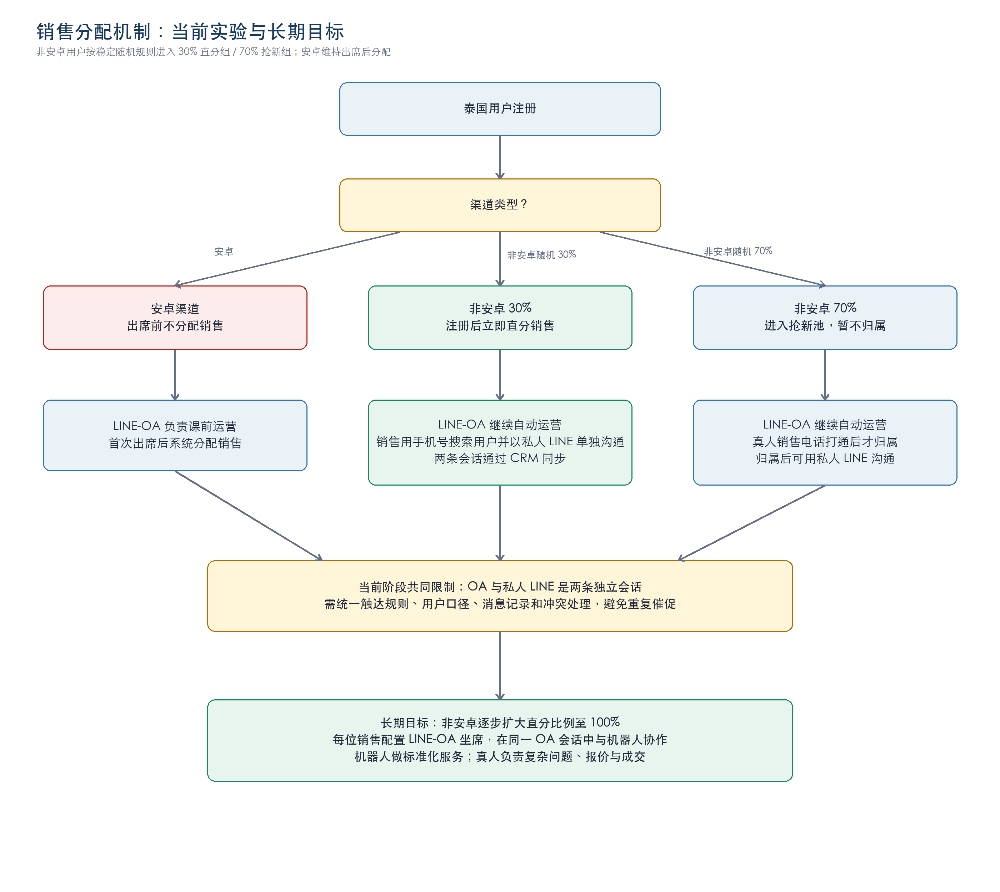

泰国 LINE-OA 课前运营与销售分配实验方案
版本：v1.0
日期：2026-08-19
状态：跨部门评审稿
核心结论
先把“关注 LINE-OA → 欢迎语推送授权链接 → 用户完成 LINE Login → CRM 绑定成功”建成泰国所有渠道注册后的统一建联入口。CRM 用户只保留“未绑定 / 已绑定”两种业务状态；绑定成功后才启动 OA 挖需、预约、提醒和二约。销售分配实验与长期 OA 坐席目标保持不变。
已确认规则
- • 泰国市场，覆盖安卓与非安卓等所有注册渠道。
- • 用户在注册完成页关注 OA 后，OA 欢迎语推送 51Talk 泰国 LINE 授权入口。
- • 用户完成 LINE Login 授权后，系统才可将 CRM user_id / 手机号与 LINE userId 绑定；绑定前无法知道 OA 用户对应哪条 CRM 注册记录。
- • CRM 业务状态只有未绑定、已绑定。授权点击、OAuth 成功、绑定失败属于过程事件，不新增用户状态。
- • 注册后 +5 分钟检查 binding_status。外呼仅对配置的较高转化渠道启用；泰国时间 08:00–21:00，按 +5 / +15 / +30 分钟最多尝试 3 次。仅“未绑定且上一轮未接通”继续重试；绑定成功或任一轮接通即停止，超窗跳过且不顺延。
- • 安卓渠道出席前不分配销售，出席后再分配。
- • 非安卓 30% 注册后立即直分；OA 自动运营，销售用手机号搜索用户并以私人 LINE 单独沟通。
- • 非安卓 70% 保持抢新，真人销售电话打通后才归属。
- • 首次缺席后只进行 1 次二约；二约成功后继续第二次提醒；第二次出席或再次缺席后结束。
主流程｜跨部门泳道图

图 1 按用户生命周期纵向展开，横向标注市场/用户触点、产研/CRM、LINE-OA、AI 外呼/短信和销售运营/真人销售五类责任部门。授权绑定是关注与 OA 自动运营之间的强制门槛。
授权绑定漏斗与指标
符合条件注册 → 点击 OA 入口 → 关注 OA → 点击授权链接 → LINE OAuth 成功 → CRM 绑定成功
- • OA 入口点击率 = 点击注册完成页 OA 入口人数 ÷ 符合条件注册人数。
- • 授权链接点击率 = 点击欢迎语授权链接人数 ÷ 收到欢迎语人数。
- • 授权完成率 = LINE OAuth 成功人数 ÷ 点击授权链接人数。
- • 绑定成功率 = CRM 绑定成功人数 ÷ LINE OAuth 成功人数。
- • CRM-LINE 有效绑定率（核心指标）= CRM 绑定成功人数 ÷ 符合条件注册人数。
绑定前，OA 关注率、欢迎语送达和授权链接点击只能作为 OA 整体匿名过程指标，不能精确归因到某个 CRM 注册用户或注册渠道。绑定成功后才能用 CRM user_id 回溯渠道。
+5 / +15 / +30 分钟补促
- 1. 每轮任务执行前查询
binding_status。 - 2. 已绑定：取消剩余外呼，启动 OA 自动运营。
- 3. 未绑定：AI 电话统一引导“先关注 OA，再打开欢迎语中的授权链接完成 LINE Login”，不区分“未关注”和“已关注未授权”。
- 4. +5 分钟未接通且仍未绑定，才进入 +15 分钟；+15 分钟仍未接通且未绑定，才进入 +30 分钟。
- 5. 绑定成功、任一轮接通、达到第三轮或超出泰国时间 08:00–21:00，均停止后续重拨。
销售分配 A/B 测试

30%/70% 必须系统随机、用户分组固定，并按渠道、注册日期/时段检查基线平衡。销售分配实验主指标使用注册至付费转化率和每注册用户收入；CRM-LINE 有效绑定率是项目建联主指标，但不是分配实验唯一判断依据。
跨部门职责
| 部门/角色 | 核心任务 | 意义 |
|---|---|---|
| 项目负责人/PMO | 统一范围、里程碑、风险和跨部门决策 | 保证端到端结果，而非局部工具上线 |
| 市场 | 传递渠道参数；改造完成页 OA 入口与授权价值表达；稳定实验流量 | 提升入口点击和有效绑定，实现渠道归因 |
| 产品/产研 | 接入 OA 欢迎语、LINE OAuth 回调、CRM 绑定、两状态模型、+5/+15/+30 分钟检测与退出开关 | 将匿名关注转成可识别 CRM 用户 |
| 前端运营 | 泰语欢迎语、授权说明、未绑定外呼话术、FAQ、预约、提醒、二约、频控和质检 | 降低授权流失并保证课前服务质量 |
| 销售运营 | 归属规则、容量、私人 LINE 协同 SOP 和冲突处理 | 避免抢单争议、重复触达和负载不均 |
| 真人销售 | 执行电话/私人 LINE；查看 OA 摘要；回写结果；课后转化 | 将 AI 信息沉淀转为高价值人工跟进 |
| 数据/BI | OA 入口→授权→绑定漏斗、实验校验、指标口径和异常监控 | 定位每个环节的流失与真实增量 |
| 法务/合规/安全 | 通信同意、隐私、权限、保存周期、退订和审计 | 控制个人信息和通信风险 |
| 第三方供应商 | 欢迎语、授权回调、绑定、Webhook、日志、坐席与故障恢复 | 避免授权绑定链路成为黑盒 |
长期演进
- 1. P0：端到端验证“关注→欢迎语授权→OAuth→CRM 绑定→OA 自动运营”。
- 2. P1：全渠道小流量验证授权绑定漏斗与 AI 电话/短信补促。
- 3. P2：非安卓 30%/70% 销售分配 A/B 测试。
- 4. P3：按 30% → 50% → 80% → 100% 扩大直分比例。
- 5. P4：每位销售配置 LINE-OA 坐席，在同一 OA 会话中实现机器人/真人接管、恢复与审计。
官方依据
注：绑定前的 OA 行为只能作为匿名过程指标；CRM 渠道归因和个性化自动化以绑定成功为前提。